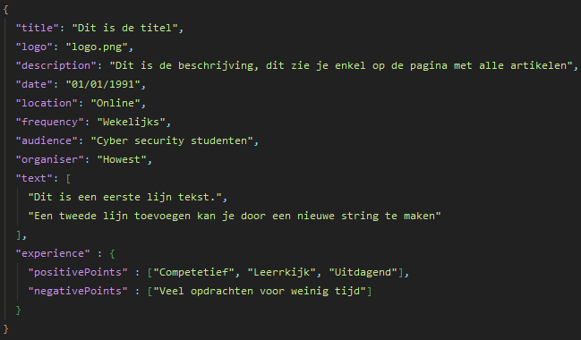

Nieuw artikel toevoegen
Tekst toevoegen
Het toevoegen van tekst aan een artikel is heel simpel.
Doordat er gebruikt gemaakt wordt van JSON, kan een nieuw artikel toegevoegd worden in artikels.json door middel van het dupliceren van een vorig en daarna de eigenschappen in te vullen.
Afbeeldingen toevoegen
Alle gebruikte afbeeldingen in verband met de artikelen moeten in de folder assets/images/articles komen met de png-extensie.
Om het logo te veranderen moet de naam van het bestand (zonder extensie) meegegeven worden als waarde voor logo in de JSON
Om een afbeelding in de tekst te plaatsen maak je een nieuwe string aan die begint met @IMAGE- gevolgd door de bestandsnaam zonder extensie.